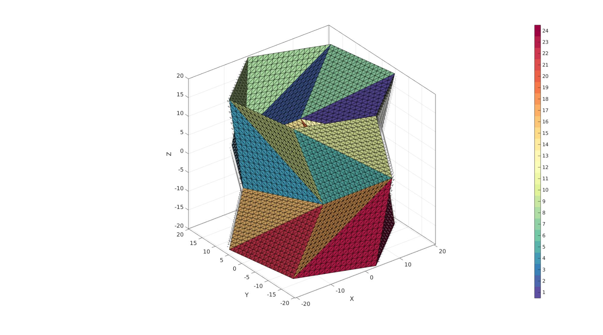
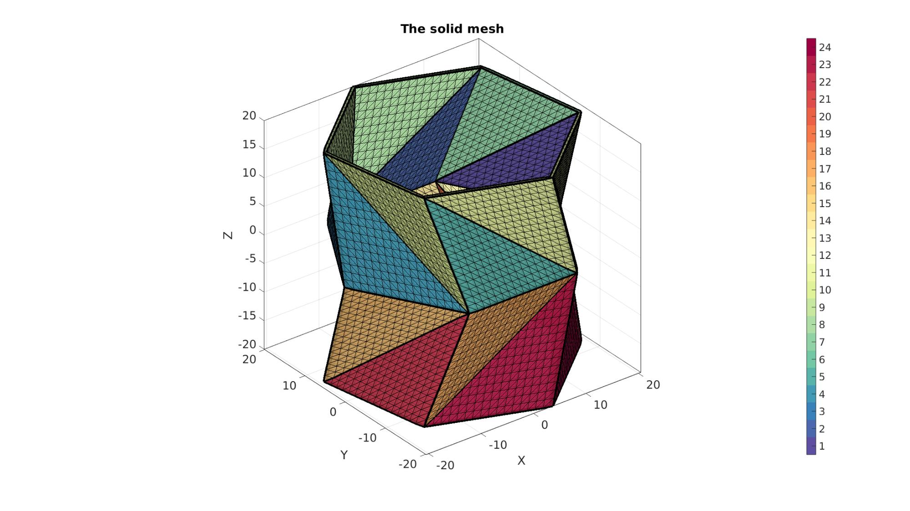

Contents
% DEMO_febio_0081_kresling_unit_subtri_01 % Below is a demonstration for: % % * Building geometry for a thin sheet kresling structure % * Thickening the sheet into a pentahedral element mesh % * Defining the boundary conditions % * Coding the febio structure % * Running the model % * Importing and visualizing the results
Keywords
- febio_spec version 4.0
- febio, FEBio
- kresling
- displacement control, displacement boundary condition
- pentahedral elements, penta6
- static, solid
- hyperelastic, Ogden
clear; close all; clc;
Plot settings
fontSize=20; faceAlpha1=0.8; %transparency markerSize=40; %For plotted points markerSize2=10; %For nodes on patches lineWidth1=1; %For meshes lineWidth2=2; %For boundary edges cMap=spectral(250); %colormap
Control parameters
%Geometry parameters np=6; %Number of points in the circle e.g. 6 r=20; %Inner radius of Kresling cylinder H=20; %Height of Kresling unit layerThickness=0.5; addMirrored=1; cornerBiteRadious=0; thickenMethod=2; %1=scale inner to outter, 2=use normal directions %Set angles a=360/np; % Derive alpha b=a/3; %Set beta %Mesh parameters pointSpacing=2; %BC and load settings rigidTop=1; %Add a rigid body to the top to apply contraints to (avoids warping of top) constrainRigidTop=1; %Constrain in terms of rotation around z-axis appliedQuasiStrain=0.5; %Percentage height reduction displacementMagnitude=-(appliedQuasiStrain.*H)*(1+addMirrored); %Material parameter set E_youngs1=1; %Material Young's modulus nu1=0.4; %Material Poisson's ratio % FEA control settings numTimeSteps=20; %Number of time steps desired max_refs=25; %Max reforms max_ups=0; %Set to zero to use full-Newton iterations opt_iter=15; %Optimum number of iterations max_retries=5; %Maximum number of retires dtmin=(1/numTimeSteps)/100; %Minimum time step size dtmax=(1/numTimeSteps); %Maximum time step size runMode='external'; % Path names defaultFolder = fileparts(fileparts(mfilename('fullpath'))); savePath=fullfile(defaultFolder,'data','temp'); % Defining file names febioFebFileNamePart='tempModel'; febioFebFileName=fullfile(savePath,[febioFebFileNamePart,'.feb']); %FEB file name febioLogFileName=[febioFebFileNamePart,'.txt']; %FEBio log file name febioLogFileName_disp=[febioFebFileNamePart,'_disp_out.txt']; %Log file name for exporting displacement febioLogFileName_stress_prin=[febioFebFileNamePart,'_stress_prin_out.txt']; %Log file name for exporting principal stress febioLogFileName_force=[febioFebFileNamePart,'_force_out.txt']; %Log file name for exporting force
%Creating coordinates on circle t=linspace(0,2*pi,np+1)'; t=t(1:end-1); %Coordinates x=r*cos(t); y=r*sin(t); z=zeros(size(x)); V1=[x y z]; %Vertices %Create second layer as shifted up V2=V1; V2(:,3)=H; %Now rotate second later around Z axis R=euler2DCM([0 0 (b/180)*pi]); V2=V2*R; %Join point sets V=[V1;V2]; %Create triangles Fq=[(1:1:np)' [(2:1:np) 1]' [(2:1:np) 1]'+np (1:1:np)'+np]; %Quads F=[Fq(:,[1 2 4]); Fq(:,[2 3 4])];
d=mean(patchEdgeLengths(F,V)); %Current point spacing nSub=ceil(d./pointSpacing); %Number of points on edges required C=(1:1:size(F,1))'; nSplitIterations=ceil(log2(nSub+1)); indIni=(1:1:size(V,1))'; for q=1:nSplitIterations [F,V]=subtri(F,V,1); C=repmat(C,1,4); C=C(:); end % d=mean(patchEdgeLengths(F,V)); %Actual pointSpacing after refine if addMirrored==1 indIni=[indIni; indIni+size(V,1)]; V2=V; V2(:,3)=-V2(:,3); %Mirror by inverting F2=fliplr(F); %To fix inversion due to mirror [F,V,C]=joinElementSets({F,F2},{V,V2},{C,C+max(C(:))}); [F,V,~,indFix]=mergeVertices(F,V); indIni=indFix(indIni); end if cornerBiteRadious>0 d=meshDistMarch(F,V,indIni); logicVertexKeep=d>cornerBiteRadious; logicFaceKeep=all(logicVertexKeep(F),2); F=F(logicFaceKeep,:); C=C(logicFaceKeep,:); [F,V]=patchCleanUnused(F,V); end
cFigure; hold on; % plotV(V1,'r.-','markerSize',markerSize,'LineWidth',lineWidth1); % plotV(V2,'g.-','markerSize',markerSize,'LineWidth',lineWidth1); % plotV(V,'b.','markerSize',markerSize); gpatch(F,V,C); patchNormPlot(F,V); % plotV(V(indIni,:),'r.','markerSize',markerSize); axisGeom; camlight headlight; colormap(cMap); icolorbar; gdrawnow;

Thickening mesh
numSteps=ceil(layerThickness./pointSpacing); switch thickenMethod case 1 %scale outward Vp1=V; Vp2=V; Vp2(:,[1 2])=(Vp2(:,[1 2])./r).*(r+layerThickness); %Get coordinates X=linspacen(Vp1(:,1),Vp2(:,1),numSteps+1); Y=linspacen(Vp1(:,2),Vp2(:,2),numSteps+1); Z=linspacen(Vp1(:,3),Vp2(:,3),numSteps+1); %Collect node set V=[X(:) Y(:) Z(:)]; %Create element matrix E=repmat(F,[numSteps,2]); E_add=0:size(Vp1,1):size(Vp1,1)*(numSteps-1); E_add=E_add(ones(size(F,1),1),:); E_add=E_add(:); E_add=E_add(:,ones(size(F,2),1)); E_add=[E_add E_add+size(Vp1,1)]; E=E+E_add; case 2 %Normal direction based [~,~,dirVec]=patchNormal(F,V); %Get node normal directions dirVec(:,3)=0; %For z directions to be zero for offsetting directions dirVec=vecnormalize(dirVec); [E,V]=patchThick(F,V,dirVec,layerThickness,numSteps); end C =repmat(C,numSteps,1); [F,CF]=element2patch(E,C,'penta6'); % Get boundary faces (two sets due to pentahedra) indb = tesBoundary(F); %Cell containing boundary face indices Fb = {F{1}(indb{1},:),F{2}(indb{2},:)}; %Cell containing boundary faces Cb = {CF{1}(indb{1},:),CF{2}(indb{2},:)}; Eb1=patchBoundaryLabelEdges(Fb{1},V,Cb{1}); %Boundary edges for visualization
Plotting meshed model
cFigure; hold on; title('The solid mesh','FontSize',fontSize); gpatch(Fb,V,Cb,'k',faceAlpha1); %Boundary faces gedge(Eb1,V,'k',4); % patchNormPlot(Fb,V); %Visualise normal directions % plotV(V1,'r.-','markerSize',markerSize,'LineWidth',lineWidth); % plotV(V2,'g.-','markerSize',markerSize,'LineWidth',lineWidth); % plotV(V,'b.','markerSize',markerSize); % gpatch(F,V,'g','k',0.5); %All faces colormap(cMap); icolorbar; axisGeom(gca,fontSize); camlight headlight; drawnow;
Defining the boundary conditions
%Finding fixed bc nodes (bottom surface) Fbq=Fb{2}; %Get the boundary quads N=patchNormal(Fbq,V); nz=[0 0 1]; d=dot(N,nz(ones(size(N,1),1),:),2); %Dot product with z-vector for all boundary face quad normals VF=patchCentre(Fbq,V); logicTopFaces = (d>0) & VF(:,3)>(max(VF(:,3))-eps(max(VF(:,3)))); logicBottomFaces = (d<0) & VF(:,3)<(min(VF(:,3))+eps(min(VF(:,3))));%~logicTopFaces; %i.e. d<0; Fbq_top = Fbq(logicTopFaces,:); %Top faces Fbq_bottom = Fbq(logicBottomFaces,:); %Bottom faces bcPrescribeList=unique(Fbq_top); bcFixList=unique(Fbq_bottom);
Visualizing boundary conditions. Markers plotted on the semi-transparent model denote the nodes in the various boundary condition lists.
hf=cFigure; title('Boundary conditions','FontSize',fontSize); xlabel('X','FontSize',fontSize); ylabel('Y','FontSize',fontSize); zlabel('Z','FontSize',fontSize); hold on; gpatch(Fb,V,'kw','k',0.5); hl(1)=plotV(V(bcPrescribeList,:),'r.','MarkerSize',markerSize); hl(2)=plotV(V(bcFixList,:),'g.','MarkerSize',markerSize); legend(hl,{'Prescribed bc', 'Fixed bc'}); axisGeom(gca,fontSize); camlight headlight; drawnow;
Defining the FEBio input structure
See also febioStructTemplate and febioStruct2xml and the FEBio user manual.
%Get a template with default settings [febio_spec]=febioStructTemplate; %febio_spec version febio_spec.ATTR.version='4.0'; %Module section febio_spec.Module.ATTR.type='solid'; %Control section febio_spec.Control.analysis='STATIC'; febio_spec.Control.time_steps=numTimeSteps; febio_spec.Control.step_size=1/numTimeSteps; febio_spec.Control.solver.max_refs=max_refs; febio_spec.Control.solver.qn_method.max_ups=max_ups; febio_spec.Control.time_stepper.dtmin=dtmin; febio_spec.Control.time_stepper.dtmax=dtmax; febio_spec.Control.time_stepper.max_retries=max_retries; febio_spec.Control.time_stepper.opt_iter=opt_iter; %Material section materialName1='Material1'; febio_spec.Material.material{1}.ATTR.name=materialName1; febio_spec.Material.material{1}.ATTR.type='neo-Hookean'; febio_spec.Material.material{1}.ATTR.id=1; febio_spec.Material.material{1}.E=E_youngs1; febio_spec.Material.material{1}.v=nu1; if rigidTop==1 materialName2='Material2'; febio_spec.Material.material{2}.ATTR.name=materialName2; febio_spec.Material.material{2}.ATTR.type='rigid body'; febio_spec.Material.material{2}.ATTR.id=2; febio_spec.Material.material{2}.density=1; febio_spec.Material.material{2}.center_of_mass=mean(V(bcPrescribeList,:),1); end % Mesh section % -> Nodes %%Area of interest febio_spec.Mesh.Nodes{1}.ATTR.name='Object1'; %The node set name febio_spec.Mesh.Nodes{1}.node.ATTR.id=(1:size(V,1))'; %The node id's febio_spec.Mesh.Nodes{1}.node.VAL=V; %The nodel coordinates % -> Elements partName1='Part1'; febio_spec.Mesh.Elements{1}.ATTR.name=partName1; %Name of this part febio_spec.Mesh.Elements{1}.ATTR.type='penta6'; %Element type febio_spec.Mesh.Elements{1}.elem.ATTR.id=(1:1:size(E,1))'; %Element id's febio_spec.Mesh.Elements{1}.elem.VAL=E; %The element matrix if rigidTop==1 partName2='Part2'; febio_spec.Mesh.Elements{2}.ATTR.name=partName2; %Name of this part febio_spec.Mesh.Elements{2}.ATTR.type='quad4'; %Element type febio_spec.Mesh.Elements{2}.elem.ATTR.id=size(E,1)+(1:1:size(Fbq_top,1))'; %Element id's febio_spec.Mesh.Elements{2}.elem.VAL=Fbq_top; %The element matrix end % -> NodeSets nodeSetName1='bcPrescribeList1'; nodeSetName2='bcFixList2'; febio_spec.Mesh.NodeSet{1}.ATTR.name=nodeSetName1; febio_spec.Mesh.NodeSet{1}.VAL=mrow(bcPrescribeList); febio_spec.Mesh.NodeSet{2}.ATTR.name=nodeSetName2; febio_spec.Mesh.NodeSet{2}.VAL=mrow(bcFixList); %MeshDomains section febio_spec.MeshDomains.SolidDomain.ATTR.name=partName1; febio_spec.MeshDomains.SolidDomain.ATTR.mat=materialName1; if rigidTop==1 febio_spec.MeshDomains.ShellDomain.ATTR.name=partName2; febio_spec.MeshDomains.ShellDomain.ATTR.mat=materialName2; end %Boundary condition section if rigidTop==0 % -> Prescribe boundary conditions febio_spec.Boundary.bc{1}.ATTR.name='prescibed_displacement_z'; febio_spec.Boundary.bc{1}.ATTR.type='prescribed displacement'; febio_spec.Boundary.bc{1}.ATTR.node_set=nodeSetName1; febio_spec.Boundary.bc{1}.dof='z'; febio_spec.Boundary.bc{1}.value.ATTR.lc=1; febio_spec.Boundary.bc{1}.value.VAL=displacementMagnitude; febio_spec.Boundary.bc{1}.relative=0; % -> Fix boundary conditions febio_spec.Boundary.bc{2}.ATTR.name='zero_displacement_xy'; febio_spec.Boundary.bc{2}.ATTR.type='zero displacement'; febio_spec.Boundary.bc{2}.ATTR.node_set=nodeSetName1; febio_spec.Boundary.bc{2}.x_dof=1; febio_spec.Boundary.bc{2}.y_dof=1; febio_spec.Boundary.bc{2}.z_dof=0; febio_spec.Boundary.bc{3}.ATTR.name='zero_displacement_xyz'; febio_spec.Boundary.bc{3}.ATTR.type='zero displacement'; febio_spec.Boundary.bc{3}.ATTR.node_set=nodeSetName2; febio_spec.Boundary.bc{3}.x_dof=1; febio_spec.Boundary.bc{3}.y_dof=1; febio_spec.Boundary.bc{3}.z_dof=1; elseif rigidTop==1 % -> Fix boundary conditions febio_spec.Boundary.bc{1}.ATTR.name='zero_displacement_xyz'; febio_spec.Boundary.bc{1}.ATTR.type='zero displacement'; febio_spec.Boundary.bc{1}.ATTR.node_set=nodeSetName2; febio_spec.Boundary.bc{1}.x_dof=1; febio_spec.Boundary.bc{1}.y_dof=1; febio_spec.Boundary.bc{1}.z_dof=1; %Rigid section % ->Rigid body fix boundary conditions febio_spec.Rigid.rigid_bc{1}.ATTR.name='RigidFix'; febio_spec.Rigid.rigid_bc{1}.ATTR.type='rigid_fixed'; febio_spec.Rigid.rigid_bc{1}.rb=2; if constrainRigidTop==1 febio_spec.Rigid.rigid_bc{1}.Rx_dof=1; febio_spec.Rigid.rigid_bc{1}.Ry_dof=1; febio_spec.Rigid.rigid_bc{1}.Rz_dof=0; febio_spec.Rigid.rigid_bc{1}.Ru_dof=1; febio_spec.Rigid.rigid_bc{1}.Rv_dof=1; febio_spec.Rigid.rigid_bc{1}.Rw_dof=1; elseif constrainRigidTop==0 febio_spec.Rigid.rigid_bc{1}.Rx_dof=1; febio_spec.Rigid.rigid_bc{1}.Ry_dof=1; febio_spec.Rigid.rigid_bc{1}.Rz_dof=0; febio_spec.Rigid.rigid_bc{1}.Ru_dof=1; febio_spec.Rigid.rigid_bc{1}.Rv_dof=1; febio_spec.Rigid.rigid_bc{1}.Rw_dof=0; end % ->Rigid body prescribe boundary conditions febio_spec.Rigid.rigid_bc{2}.ATTR.name='RigidPrescribe'; febio_spec.Rigid.rigid_bc{2}.ATTR.type='rigid_displacement'; febio_spec.Rigid.rigid_bc{2}.rb=2; febio_spec.Rigid.rigid_bc{2}.dof='z'; febio_spec.Rigid.rigid_bc{2}.value.ATTR.lc=1; febio_spec.Rigid.rigid_bc{2}.value.VAL=displacementMagnitude; febio_spec.Rigid.rigid_bc{2}.relative=0; end %LoadData section % -> load_controller febio_spec.LoadData.load_controller{1}.ATTR.name='LC_1'; febio_spec.LoadData.load_controller{1}.ATTR.id=1; febio_spec.LoadData.load_controller{1}.ATTR.type='loadcurve'; febio_spec.LoadData.load_controller{1}.interpolate='LINEAR'; %febio_spec.LoadData.load_controller{1}.extend='CONSTANT'; febio_spec.LoadData.load_controller{1}.points.pt.VAL=[0 0; 1 1]; %Output section % -> log file febio_spec.Output.logfile.ATTR.file=febioLogFileName; febio_spec.Output.logfile.node_data{1}.ATTR.file=febioLogFileName_disp; febio_spec.Output.logfile.node_data{1}.ATTR.data='ux;uy;uz'; febio_spec.Output.logfile.node_data{1}.ATTR.delim=','; febio_spec.Output.logfile.node_data{2}.ATTR.file=febioLogFileName_force; febio_spec.Output.logfile.node_data{2}.ATTR.data='Rx;Ry;Rz'; febio_spec.Output.logfile.node_data{2}.ATTR.delim=','; febio_spec.Output.logfile.element_data{1}.ATTR.file=febioLogFileName_stress_prin; febio_spec.Output.logfile.element_data{1}.ATTR.data='s1;s2;s3'; febio_spec.Output.logfile.element_data{1}.ATTR.delim=','; % Plotfile section febio_spec.Output.plotfile.compression=0;
Quick viewing of the FEBio input file structure
The febView function can be used to view the xml structure in a MATLAB figure window.
%%|febView(febio_spec); %Viewing the febio file|
Exporting the FEBio input file
Exporting the febio_spec structure to an FEBio input file is done using the febioStruct2xml function.
febioStruct2xml(febio_spec,febioFebFileName); %Exporting to file and domNode %system(['gedit ',febioFebFileName,' &']);
Running the FEBio analysis
To run the analysis defined by the created FEBio input file the runMonitorFEBio function is used. The input for this function is a structure defining job settings e.g. the FEBio input file name. The optional output runFlag informs the user if the analysis was run succesfully.
febioAnalysis.run_filename=febioFebFileName; %The input file name febioAnalysis.run_logname=febioLogFileName; %The name for the log file febioAnalysis.disp_on=1; %Display information on the command window febioAnalysis.runMode=runMode; febioAnalysis.maxLogCheckTime=10; %Max log file checking time [runFlag]=runMonitorFEBio(febioAnalysis);%START FEBio NOW!!!!!!!!
%%%%%%%%%%%%%%%%%%%%%%%%%%%%%%%%%%%%%%%%%%%%%%%%%%%%%%%%%%%%%%%%%%%%%%%%%%%
--------> RUNNING/MONITORING FEBIO JOB <-------- 04-May-2023 18:01:55
FEBio path: /home/kevin/FEBioStudio/bin/febio4
# Attempt removal of existing log files 04-May-2023 18:01:55
* Removal succesful 04-May-2023 18:01:55
# Attempt removal of existing .xplt files 04-May-2023 18:01:55
* Removal succesful 04-May-2023 18:01:55
# Starting FEBio... 04-May-2023 18:01:55
Max. total analysis time is: Inf s
* Waiting for log file creation 04-May-2023 18:01:55
Max. wait time: 10 s
* Log file found. 04-May-2023 18:01:55
# Parsing log file... 04-May-2023 18:01:55
number of iterations : 4 04-May-2023 18:01:55
number of reformations : 4 04-May-2023 18:01:55
------- converged at time : 0.05 04-May-2023 18:01:55
number of iterations : 4 04-May-2023 18:01:56
number of reformations : 4 04-May-2023 18:01:56
------- converged at time : 0.1 04-May-2023 18:01:56
number of iterations : 5 04-May-2023 18:01:56
number of reformations : 5 04-May-2023 18:01:56
------- converged at time : 0.15 04-May-2023 18:01:56
number of iterations : 9 04-May-2023 18:01:57
number of reformations : 9 04-May-2023 18:01:57
------- converged at time : 0.2 04-May-2023 18:01:57
number of iterations : 11 04-May-2023 18:01:57
number of reformations : 11 04-May-2023 18:01:57
------- converged at time : 0.25 04-May-2023 18:01:57
number of iterations : 6 04-May-2023 18:01:57
number of reformations : 6 04-May-2023 18:01:57
------- converged at time : 0.3 04-May-2023 18:01:57
number of iterations : 4 04-May-2023 18:01:58
number of reformations : 4 04-May-2023 18:01:58
------- converged at time : 0.35 04-May-2023 18:01:58
number of iterations : 4 04-May-2023 18:01:58
number of reformations : 4 04-May-2023 18:01:58
------- converged at time : 0.4 04-May-2023 18:01:58
number of iterations : 4 04-May-2023 18:01:58
number of reformations : 4 04-May-2023 18:01:58
------- converged at time : 0.45 04-May-2023 18:01:58
number of iterations : 4 04-May-2023 18:01:58
number of reformations : 4 04-May-2023 18:01:58
------- converged at time : 0.5 04-May-2023 18:01:58
number of iterations : 4 04-May-2023 18:01:59
number of reformations : 4 04-May-2023 18:01:59
------- converged at time : 0.55 04-May-2023 18:01:59
number of iterations : 4 04-May-2023 18:01:59
number of reformations : 4 04-May-2023 18:01:59
------- converged at time : 0.6 04-May-2023 18:01:59
number of iterations : 4 04-May-2023 18:01:59
number of reformations : 4 04-May-2023 18:01:59
------- converged at time : 0.65 04-May-2023 18:01:59
number of iterations : 4 04-May-2023 18:01:59
number of reformations : 4 04-May-2023 18:01:59
------- converged at time : 0.7 04-May-2023 18:01:59
number of iterations : 3 04-May-2023 18:01:59
number of reformations : 3 04-May-2023 18:01:59
------- converged at time : 0.75 04-May-2023 18:01:59
number of iterations : 3 04-May-2023 18:02:00
number of reformations : 3 04-May-2023 18:02:00
------- converged at time : 0.8 04-May-2023 18:02:00
number of iterations : 3 04-May-2023 18:02:00
number of reformations : 3 04-May-2023 18:02:00
------- converged at time : 0.85 04-May-2023 18:02:00
number of iterations : 3 04-May-2023 18:02:00
number of reformations : 3 04-May-2023 18:02:00
------- converged at time : 0.9 04-May-2023 18:02:00
number of iterations : 3 04-May-2023 18:02:00
number of reformations : 3 04-May-2023 18:02:00
------- converged at time : 0.95 04-May-2023 18:02:00
number of iterations : 4 04-May-2023 18:02:00
number of reformations : 4 04-May-2023 18:02:00
------- converged at time : 1 04-May-2023 18:02:00
Elapsed time : 0:00:05 04-May-2023 18:02:00
N O R M A L T E R M I N A T I O N
# Done 04-May-2023 18:02:00
%%%%%%%%%%%%%%%%%%%%%%%%%%%%%%%%%%%%%%%%%%%%%%%%%%%%%%%%%%%%%%%%%%%%%%%%%%%
Import FEBio results
if runFlag==1 %i.e. a succesful run
% Importing nodal displacements from a log file dataStruct=importFEBio_logfile(fullfile(savePath,febioLogFileName_disp),0,1); %Access data N_disp_mat=dataStruct.data; %Displacement timeVec=dataStruct.time; %Time %Create deformed coordinate set V_DEF=N_disp_mat+repmat(V,[1 1 size(N_disp_mat,3)]);
Importing element stress from a log file
dataStruct=importFEBio_logfile(fullfile(savePath,febioLogFileName_stress_prin),0,1);
%Access data
E_stress_mat=dataStruct.data;
E_stress_mat_VM=sqrt(( (E_stress_mat(:,1,:)-E_stress_mat(:,2,:)).^2 + ...
(E_stress_mat(:,2,:)-E_stress_mat(:,3,:)).^2 + ...
(E_stress_mat(:,1,:)-E_stress_mat(:,3,:)).^2 )/2); %Von Mises stress
Plotting the simulated results using anim8 to visualize and animate deformations
[CV]=faceToVertexMeasure(E,V,E_stress_mat_VM(:,:,end));
% Create basic view and store graphics handle to initiate animation
hf=cFigure; %Open figure /usr/local/MATLAB/R2020a/bin/glnxa64/jcef_helper: symbol lookup error: /lib/x86_64-linux-gnu/libpango-1.0.so.0: undefined symbol: g_ptr_array_copy
gtitle([febioFebFileNamePart,': Press play to animate']);
title('$\sigma_{vm}$ [MPa]','Interpreter','Latex')
hp1=gpatch(Fb,V_DEF(:,:,end),CV,'none',1,lineWidth1); %Add graphics object to animate
hp2=gedge(Eb1,V_DEF(:,:,end),'k',lineWidth2);
for qp=1:1:numel(hp1) %For all graphics objects e.g. triangles/quads
hp1(qp).FaceColor='interp';
end
axisGeom(gca,fontSize);
colormap(cMap); colorbar;
caxis([min(E_stress_mat_VM(:)) max(E_stress_mat_VM(:))/2]);
axis(axisLim(V_DEF)); %Set axis limits statically
view(140,30);
camlight headlight;
% Set up animation features
animStruct.Time=timeVec; %The time vector
for qt=1:1:size(N_disp_mat,3) %Loop over time increments
[CV]=faceToVertexMeasure(E,V,E_stress_mat_VM(:,:,qt));
%Set entries in animation structure
animStruct.Handles{qt}=[hp1(1) hp1(1) hp1(2) hp1(2) hp2]; %Handles of objects to animate
animStruct.Props{qt}={'Vertices','CData','Vertices','CData','Vertices'}; %Properties of objects to animate
animStruct.Set{qt}={V_DEF(:,:,qt),CV,V_DEF(:,:,qt),CV,V_DEF(:,:,qt)}; %Property values for to set in order to animate
end
anim8(hf,animStruct); %Initiate animation feature
drawnow;

end